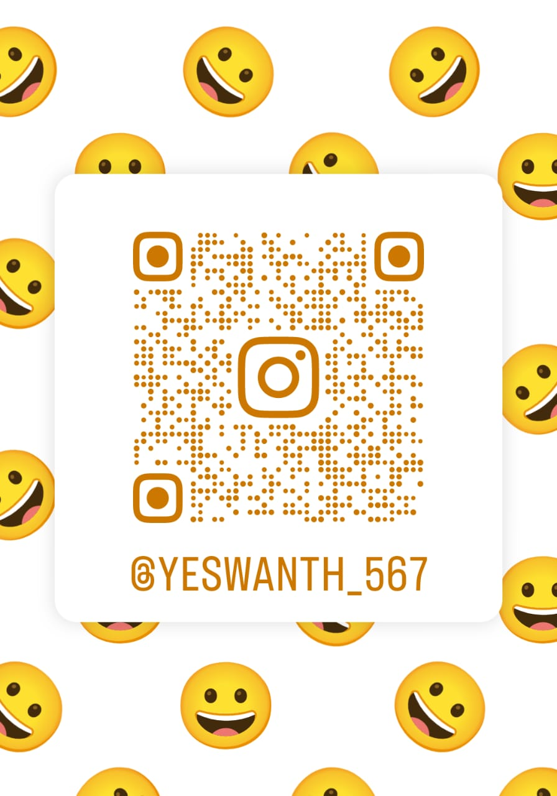
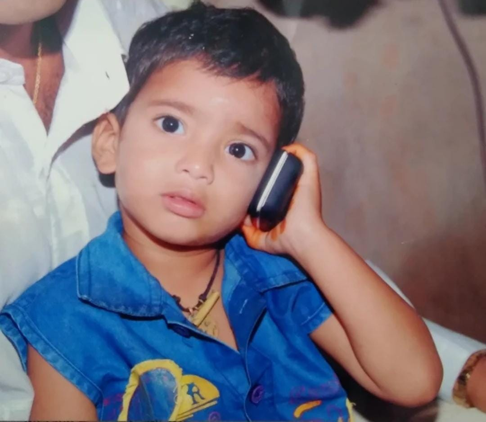
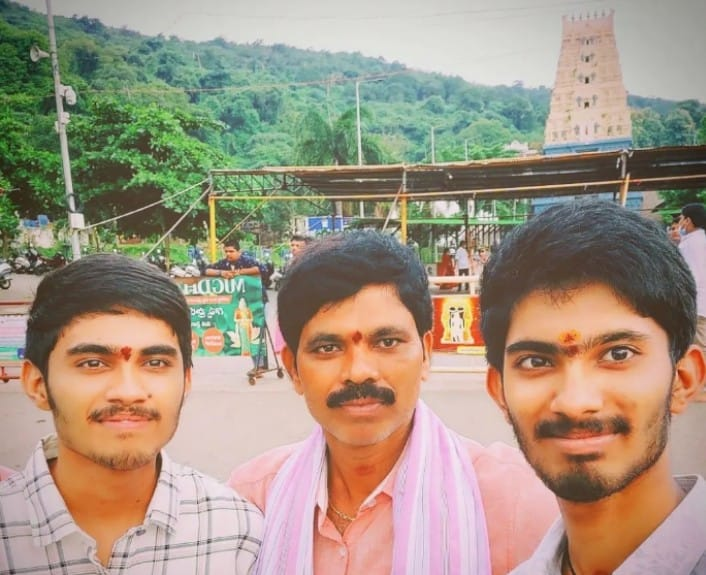
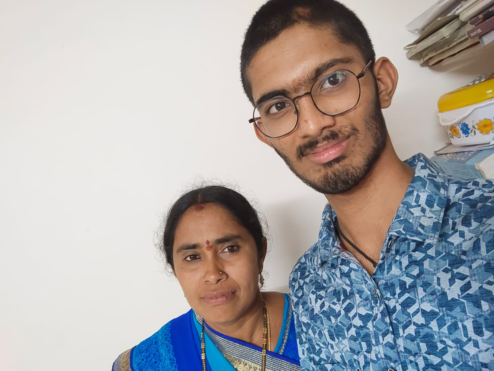
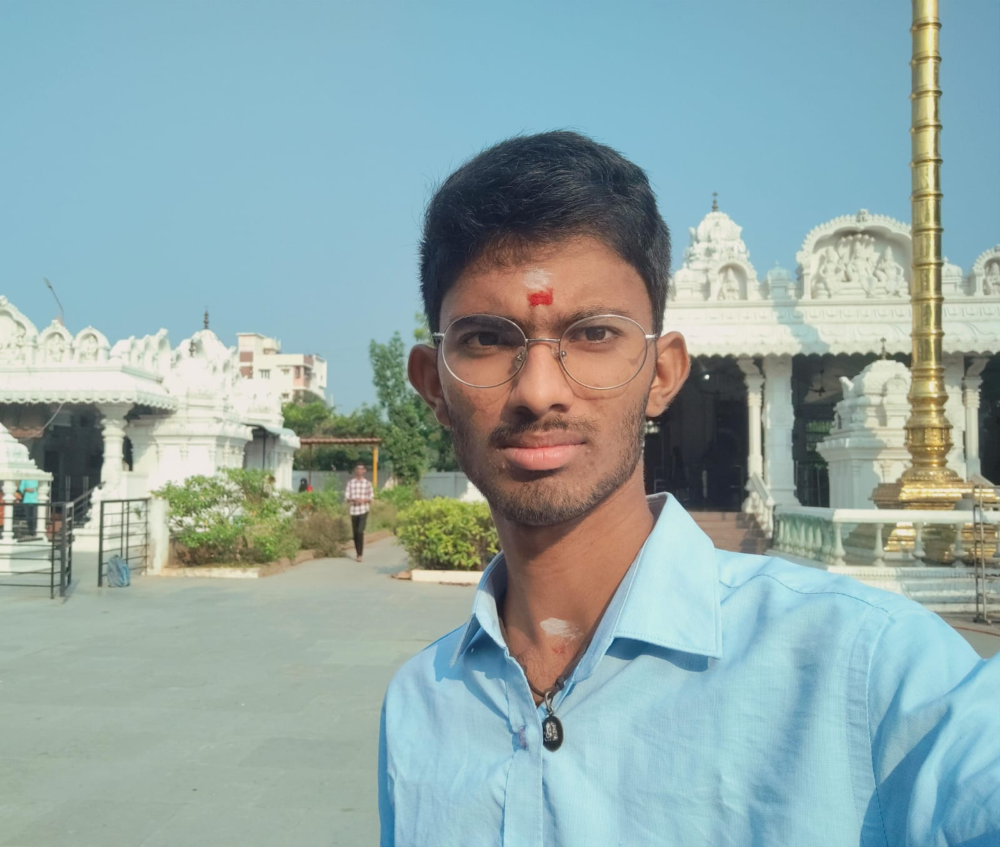
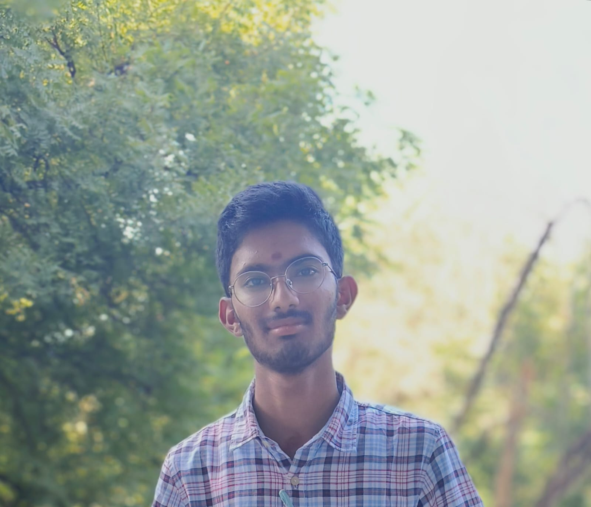
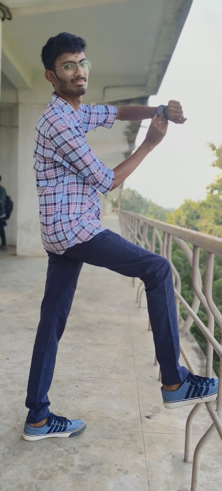
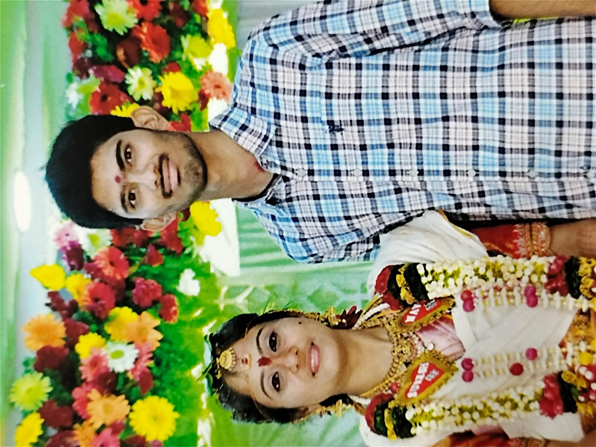
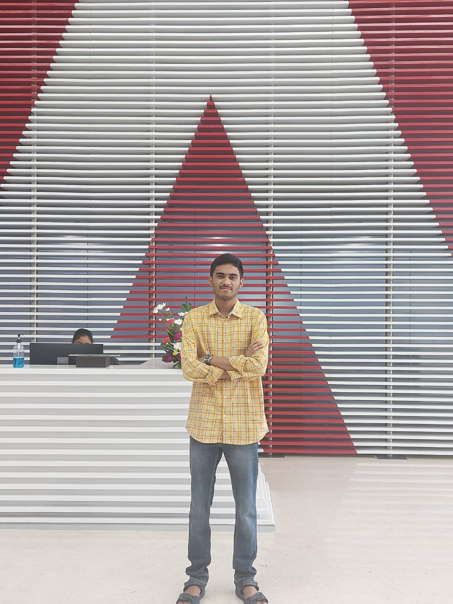

YESWANTH KUMAR 😎 ...
YESWANTH KUMAR PAILA - ACHIEVER
Yeswanth Kumar born to Mr. SANYASI RAO [father] and Mrs. LAKSHMI [mother]on 26th,januaury,2006 (i.e.INDIAN REPUBLIC DAY) is a future software developer,he has an elder brother namely SYAM MANOJ KUMAR studying in IIT KHARAGPUR final year in Computer Science Engineering.His grandparents P.APPALANAIDU [87yrs] and P.ADILAXMI[75yrs] are Yeswanth's father is a farmer and his mother is a home maker.He is a big fan and follower of VIRAT KOHLI.His all time inspiration is VIRAT since from his young age.yeswanth is intrested in playing games such as cricket , volleyball,badminton,chess etc.. . In liesure time yeswanth always thinks about how to make changes around the world and innovate new things.He just wants to know new things going around him.He is a good motivator for himself and other. If a person is in need he is always be the first person to take part in.He has done his primary and secondary school education in LITTLE ANGELS SCHOOL,UKKUNAGARAM.He completed his intermediated in NARAYANA JUNIOUR COLLEGE , KURMANNAPALEM.He secured 468/500 in 10th CBSE EXAMINATION and 435/500 in 12th cbse examination. He doesnt bother about marks in the view of acvademic perspective , he just want to learn skills. He has a very good sportsmanship.He a very good positive attitude.Finally yeswanth is a young guy who always believes in his own hardword, determination and passion towards his goals.he always wants to learn new things around him.
MY SOCIAL MEDIA WEBSITES FOR MORE INTERACTION
click here to visit YESWANTH'S instagram profile
for any questions catch me up at this TELEGRAM QR
For forther information plz contact this number- 8688253696
visit my insta page for interaction with me 







